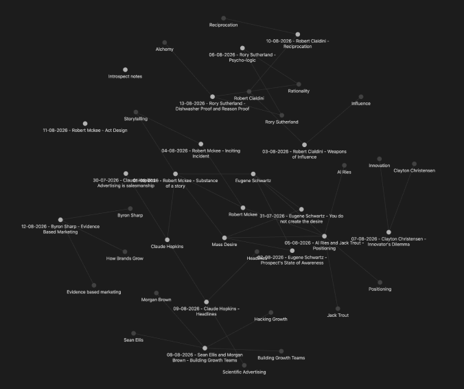

Sushil Athreya


The only way to achieve mastery is to study the masters with discipline.
I felt like I wasn’t compounding ideas as much as I wanted to.
This is an experiment to fix this, based on 2 concepts:
I've built a newsletter that codex will send to my email every morning consisting of:
↳ 70% - knowledge from the masters in fields I want to study like persuasion, storytelling, behavioural economics, etc.
↳ 20% - the latest on technology, marketing, brands, etc.
↳ 10% - top 5 tweets from my timeline (without me scrolling myself)
The goal is to subtract the number of interfaces I switch between while compounding what matters. Codex also knows what I’m working on, so it prompts me to practise applying this knowledge on my current projects.
The exciting part about this is that I can expand the fields of study whenever I want.
A resounding yes. I’ve studied and learnt way more than I would have without this system.

Want to see more of my work?
Back to Portfolio